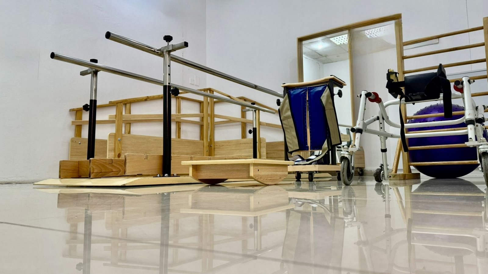
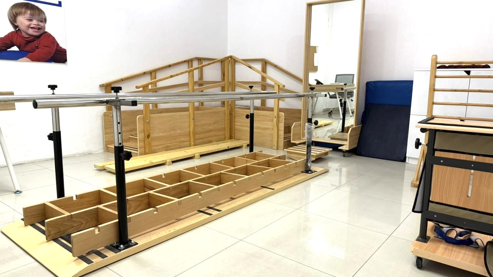
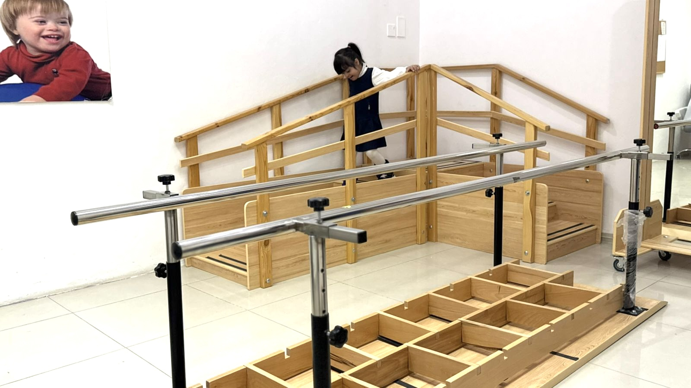

العلاجُ الطبيعيُّ
العلاجُ الطبيعيُّ هو أحدُ فروعِ الرعايةِ الصحيَّةِ التي تُقَدَّمُ للمستفيدينَ الذينَ يُعانونَ من مشكلاتٍ حركيَّةٍ أو حالاتٍ مرضيَّةٍ، ويهدفُ إلى تطويرِ الحركةِ والمحافظةِ عليها وإعادتها إلى أَقْصَى مستوى وَظِيفِيٍّ ممكنٍ في مختلفِ مراحلِ الحياةِ. ويُقَدِّمُ قسمُ العلاجِ الطبيعيِّ برامجَ متخصِّصةً لتحسينِ القدرةِ الحركيَّةِ لدى المستفيدينَ، من خلالِ تقويةِ العضلاتِ، وتحسينِ التوازنِ، وتعزيزِ القدرةِ على الجلوسِ والوقوفِ والمشيِ، ودعمِ النموِّ الحركيِّ وفقَ أفضلِ الممارساتِ العلاجيَّةِ. كما يهدفُ العلاجُ الطبيعيُّ إلى تخفيفِ الآلامِ، وتحسينِ طريقةِ الحركةِ، والوقايةِ من الإعاقةِ أو الحَدِّ منها، ممَّا يُسهمُ في تحسينِ جودةِ حياةِ المستفيدينَ وتقليلِ الحاجةِ إلى التدخُّلِ الجراحيِّ متى أمكنَ ذلكَ.
لقطات متنوعة

عنوان الصورة...

عنوان الصورة...
